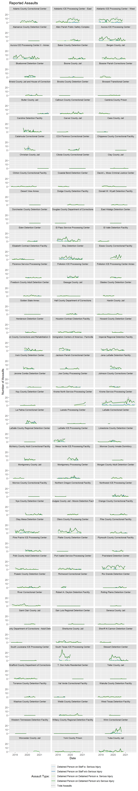

The ICE G-324A Significant Incident Summary sheet contains information on a number of different kinds of assaults. Specifically, there are four categories of assaults listed:
Conspicuously absent from this list of assault types are assaults on detained persons by staff. This is deeply concerning because already initial review of inspection forms and prior news stories indicates that staff assaults on detained persons do occur. For example, at the Bristol County County Jail and House of Corrections independent investigation by the Massachusetts Office of Attorney General (MAOG) found that facility staff found a “planned and deliberate-use of force against the ICE detainees that was disproportionate to the security needs at that time and unnecessarily caused, or risked causing, harm to all involved” (MA AG 2020, ii). The MOAG found that facility staff used “a flash bang grenade, pepper-ball launchers, pepper spray canisters, anti-riot shields, and canines–against detainees who had exhibited calm and nonviolent behavior for at least an hour before this operation” (MA AG 2020, ii). Investigations found that staff “deployed these weapons both indiscriminately upon entry and also specifically against detainees who were not combative, assaultive, or otherwise actively resisting staff” (MA AG 2020, ii).
While the aforementioned Bristol County Jail may be a particularly egregious instance of staff assaulting detained persons, it is not an isolated case. For example, video evidence from the Torrance County Detention Facility in Estancia NM shows CoreCivic’s private facility staff pepper spraying persons detained by ICE on hunger strike (Swetlitz 2020). Review of inspections has also revealed additional inappropriate use of force incidents. The omission of a field to record instances of staff assaulting detained persons occludes and obscures real instances of violence. As the inspections process is a detention reform designed to make a more humane system of civil incarceration, the omission of categories for logging staff physical mistreatment of detained persons raises serious questions about the inspections processes ability to record significant and documented civil and human rights violations.
# Load necessary libraries
# Reading and wrangling
library(googlesheets4)
library(readr)
library(tidyverse)## -- Attaching packages --------------------------------------- tidyverse 1.3.1 --## v ggplot2 3.3.4 v dplyr 1.0.6
## v tibble 3.1.1 v stringr 1.4.0
## v tidyr 1.1.3 v forcats 0.5.1
## v purrr 0.3.4## -- Conflicts ------------------------------------------ tidyverse_conflicts() --
## x dplyr::filter() masks stats::filter()
## x dplyr::lag() masks stats::lag()library(janitor)##
## Attaching package: 'janitor'## The following objects are masked from 'package:stats':
##
## chisq.test, fisher.testlibrary(lubridate)##
## Attaching package: 'lubridate'## The following objects are masked from 'package:base':
##
## date, intersect, setdiff, unionlibrary(DT)
# Plotting
library(ggplot2)
library(RColorBrewer)
# Tables
library(kableExtra)##
## Attaching package: 'kableExtra'## The following object is masked from 'package:dplyr':
##
## group_rows# Load custom function
source("function_clean_facility_names.R", local = knitr::knit_global())# Read Google Sheet incident worksheet, convert to data frame, and wrangle
df_324_inc <- read_sheet("https://docs.google.com/spreadsheets/d/1im5VSi3bIEi13O8WQ56wEIXSyNEstbGMylXXgD9bAG0/edit#gid=1858227071",
sheet="G-324A-19-inc",
col_types = "c") %>%
clean_names() %>%
# Run custom cleaning function
clean_facility_names() %>%
# df_specific changes
unite(date, year:month) %>%
mutate(facility = as.factor(facility),
state = as.factor(state),
date = ym(date)
) %>%
mutate_at(c(6:76), as.numeric)## > Using an auto-discovered, cached token## To suppress this message, modify your code or options to clearly consent to
## the use of a cached token## See gargle's "Non-interactive auth" vignette for more details:## <https://gargle.r-lib.org/articles/non-interactive-auth.html>## > The googlesheets4 package is using a cached token for 'n8craig@gmail.com'## Reading from "000inspection_forms"## Range "'G-324A-19-inc'"## New names:
## * `Sexual abuse allegations detainee on staff/contractor/volunteer` -> `Sexual abuse allegations detainee on staff/contractor/volunteer...29`
## * `Sexual abuse allegations detainee on staff/contractor/volunteer` -> `Sexual abuse allegations detainee on staff/contractor/volunteer...34`## Warning: Expected 2 pieces. Missing pieces filled with `NA` in 12 rows [2144,
## 2145, 2146, 2147, 2148, 2149, 2150, 2151, 2152, 2153, 2154, 2155].## Warning: 1 failed to parse.## Warning in mask$eval_all_mutate(quo): NAs introduced by coercion
## Warning in mask$eval_all_mutate(quo): NAs introduced by coercion
## Warning in mask$eval_all_mutate(quo): NAs introduced by coercion
## Warning in mask$eval_all_mutate(quo): NAs introduced by coercion
## Warning in mask$eval_all_mutate(quo): NAs introduced by coercion
## Warning in mask$eval_all_mutate(quo): NAs introduced by coercion
## Warning in mask$eval_all_mutate(quo): NAs introduced by coercion
## Warning in mask$eval_all_mutate(quo): NAs introduced by coercion
## Warning in mask$eval_all_mutate(quo): NAs introduced by coercion
## Warning in mask$eval_all_mutate(quo): NAs introduced by coercion
## Warning in mask$eval_all_mutate(quo): NAs introduced by coercion
## Warning in mask$eval_all_mutate(quo): NAs introduced by coercion
## Warning in mask$eval_all_mutate(quo): NAs introduced by coercion
## Warning in mask$eval_all_mutate(quo): NAs introduced by coercion
## Warning in mask$eval_all_mutate(quo): NAs introduced by coercion
## Warning in mask$eval_all_mutate(quo): NAs introduced by coercion
## Warning in mask$eval_all_mutate(quo): NAs introduced by coercion
## Warning in mask$eval_all_mutate(quo): NAs introduced by coercion
## Warning in mask$eval_all_mutate(quo): NAs introduced by coercion
## Warning in mask$eval_all_mutate(quo): NAs introduced by coercion
## Warning in mask$eval_all_mutate(quo): NAs introduced by coercion
## Warning in mask$eval_all_mutate(quo): NAs introduced by coercion
## Warning in mask$eval_all_mutate(quo): NAs introduced by coercion
## Warning in mask$eval_all_mutate(quo): NAs introduced by coercion
## Warning in mask$eval_all_mutate(quo): NAs introduced by coercion
## Warning in mask$eval_all_mutate(quo): NAs introduced by coercion
## Warning in mask$eval_all_mutate(quo): NAs introduced by coercion
## Warning in mask$eval_all_mutate(quo): NAs introduced by coercion
## Warning in mask$eval_all_mutate(quo): NAs introduced by coercion
## Warning in mask$eval_all_mutate(quo): NAs introduced by coercion
## Warning in mask$eval_all_mutate(quo): NAs introduced by coercion
## Warning in mask$eval_all_mutate(quo): NAs introduced by coercion
## Warning in mask$eval_all_mutate(quo): NAs introduced by coercion
## Warning in mask$eval_all_mutate(quo): NAs introduced by coercion
## Warning in mask$eval_all_mutate(quo): NAs introduced by coercion
## Warning in mask$eval_all_mutate(quo): NAs introduced by coercion
## Warning in mask$eval_all_mutate(quo): NAs introduced by coercion
## Warning in mask$eval_all_mutate(quo): NAs introduced by coercion
## Warning in mask$eval_all_mutate(quo): NAs introduced by coercion
## Warning in mask$eval_all_mutate(quo): NAs introduced by coercion
## Warning in mask$eval_all_mutate(quo): NAs introduced by coercion
## Warning in mask$eval_all_mutate(quo): NAs introduced by coercion
## Warning in mask$eval_all_mutate(quo): NAs introduced by coercion
## Warning in mask$eval_all_mutate(quo): NAs introduced by coercion
## Warning in mask$eval_all_mutate(quo): NAs introduced by coercion
## Warning in mask$eval_all_mutate(quo): NAs introduced by coercion
## Warning in mask$eval_all_mutate(quo): NAs introduced by coercion
## Warning in mask$eval_all_mutate(quo): NAs introduced by coercion
## Warning in mask$eval_all_mutate(quo): NAs introduced by coercion
## Warning in mask$eval_all_mutate(quo): NAs introduced by coercion
## Warning in mask$eval_all_mutate(quo): NAs introduced by coercion
## Warning in mask$eval_all_mutate(quo): NAs introduced by coercion
## Warning in mask$eval_all_mutate(quo): NAs introduced by coercion
## Warning in mask$eval_all_mutate(quo): NAs introduced by coercion
## Warning in mask$eval_all_mutate(quo): NAs introduced by coercion
## Warning in mask$eval_all_mutate(quo): NAs introduced by coercion
## Warning in mask$eval_all_mutate(quo): NAs introduced by coercion
## Warning in mask$eval_all_mutate(quo): NAs introduced by coercion
## Warning in mask$eval_all_mutate(quo): NAs introduced by coercion
## Warning in mask$eval_all_mutate(quo): NAs introduced by coercion
## Warning in mask$eval_all_mutate(quo): NAs introduced by coercion
## Warning in mask$eval_all_mutate(quo): NAs introduced by coercion
## Warning in mask$eval_all_mutate(quo): NAs introduced by coercion
## Warning in mask$eval_all_mutate(quo): NAs introduced by coercion
## Warning in mask$eval_all_mutate(quo): NAs introduced by coercion
## Warning in mask$eval_all_mutate(quo): NAs introduced by coercion
## Warning in mask$eval_all_mutate(quo): NAs introduced by coercion
## Warning in mask$eval_all_mutate(quo): NAs introduced by coercion
## Warning in mask$eval_all_mutate(quo): NAs introduced by coercion
## Warning in mask$eval_all_mutate(quo): NAs introduced by coercion
## Warning in mask$eval_all_mutate(quo): NAs introduced by coerciondf_assaults <- df_324_inc %>%
# Subset the df to only the used cols
select(id, facility, date,
detainee_physical_assault_on_staff_with_serious_injury:
detainee_on_detainee_physical_assault_fight_with_no_serious_injury
) %>%
# Need the rowwise function to compute a row-at-a-time
# in the following mutate function
rowwise(id) %>%
# Create a new total column
mutate(total_assaults = sum(c_across(
detainee_physical_assault_on_staff_with_serious_injury:
detainee_on_detainee_physical_assault_fight_with_no_serious_injury
))) %>%
# Call a range of table columns and pivot long
pivot_longer(.,
cols= detainee_physical_assault_on_staff_with_serious_injury:total_assaults,
names_to = "assault_type",
values_to = "assault_count") %>%
# Remove NA Values
drop_na() %>%
# Explicitly define factor levels
mutate(assault_type = factor(assault_type, levels = c(
"detainee_physical_assault_on_staff_with_serious_injury",
"detainee_physical_assault_on_staff_with_no_serious_injury",
"detainee_on_detainee_physical_assault_fight_with_serious_injury",
"detainee_on_detainee_physical_assault_fight_with_no_serious_injury",
"total_assaults"
)))df_assaults %>%
group_by(assault_type) %>%
summarise(`Total Assaults by Type` = sum(assault_count)) %>%
ungroup() %>%
kable(caption = "Total Assaults by Type",
col.names = c("Assault Type", "Total Assault Type")) %>%
kable_styling(c("hover", "striped", "condensed", "responsive"))| Assault Type | Total Assault Type |
|---|---|
| detainee_physical_assault_on_staff_with_serious_injury | 13 |
| detainee_physical_assault_on_staff_with_no_serious_injury | 333 |
| detainee_on_detainee_physical_assault_fight_with_serious_injury | 126 |
| detainee_on_detainee_physical_assault_fight_with_no_serious_injury | 2926 |
| total_assaults | 3390 |
df_assaults %>%
group_by(facility) %>%
summarise(total_assaults = sum(assault_count)) %>%
arrange(desc(total_assaults)) %>%
ungroup() %>%
kable(caption = "Total Assaults by Facility",
col.names = c("Facility", "Total Assaults by Facility")) %>%
kable_styling(c("hover", "striped", "condensed", "responsive")) %>%
scroll_box(height = "300px")| Facility | Total Assaults by Facility |
|---|---|
| Krome Service Processing Center | 470 |
| Adelanto ICE Processing Center - West | 390 |
| Prairieland Detention Center | 330 |
| South Texas ICE Processing Center | 312 |
| Adelanto ICE Processing Center - East | 264 |
| Otero County Processing Center | 240 |
| Aurora ICE Processing Center | 222 |
| Aurora ICE Processing Center II - Annex | 222 |
| Stewart Detention Center | 218 |
| Eloy Detention Center | 216 |
| Otay Mesa Detention Center | 200 |
| El Paso Service Processing Center | 192 |
| Winn Correctional Center | 172 |
| Essex County Correctional Facility | 146 |
| Imperial Regional Detention Facility | 136 |
| LaSalle ICE Processing Center | 128 |
| Hudson County Corrections and Rehabilitation Center | 118 |
| Immigration Centers of America - Farmville | 108 |
| River Correctional Center | 106 |
| Caroline Detention Facility | 104 |
| Jena LaSalle Detention Facility | 98 |
| Yuba County Jail | 96 |
| Adams County Correctional Center | 94 |
| La Palma Correctional Center | 92 |
| Bergen County Jail | 86 |
| Northwest ICE Processing Center | 78 |
| Catahoula Correctional Center | 72 |
| Mesa Verde ICE Processing Facility | 72 |
| Port Isabel Service Processing Center | 70 |
| Folkston ICE Processing Center | 68 |
| Bluebonnet Detention Center | 64 |
| Montgomery Processing Center | 60 |
| Pulaski County Detention Center | 60 |
| Sherburne County Jail | 60 |
| Houston Contract Detention Facility | 58 |
| Pine Prairie ICE Processing Center | 58 |
| Baker County Detention Center | 54 |
| Calhoun County Correctional Center | 54 |
| Limestone County Detention Center | 50 |
| Polk County Adult Detention Center | 50 |
| Irwin County Detention Center | 48 |
| McHenry County Adult Correctional Facility | 48 |
| Strafford County Department of Corrections | 46 |
| Allen Parish Public Safety Complex | 45 |
| Krome North Service Processing Center | 40 |
| Elizabeth Contract Detention Facility | 34 |
| Nye County Detention Center | 34 |
| Pike County Correctional Facility | 32 |
| Webb County Detention Center | 32 |
| CCA Florence Correctional Center | 30 |
| Joe Corley Processing Center | 30 |
| Wakulla County Detention Facility | 30 |
| David L. Moss Criminal Justice Center | 28 |
| Johnson County Corrections Center | 28 |
| Orange County Correctional Facility | 26 |
| Richwood Correctional Center | 26 |
| Bossier Parish Corrections Center | 24 |
| Florence Service Processing Center | 24 |
| Folkston ICE Processing Center Annex | 24 |
| Freeborn County Adult Detention Center | 24 |
| Okmulgee County Jail - Moore Detention Facility | 24 |
| Clinton County Correctional Facility | 22 |
| Jackson Parish Correctional Center | 22 |
| Rio Grande Detention Center | 22 |
| Bristol County Jail and House of Correction | 20 |
| Morgan County Adult Detention Center | 20 |
| Plymouth County Correctional Facility | 20 |
| Cambria County Prison | 18 |
| Glades County Detention Center | 16 |
| Hall County Department of Corrections | 16 |
| York County Prison | 16 |
| Henderson Detention Center | 14 |
| Seneca County Jail | 14 |
| Broward Transitional Center | 12 |
| Butler County Jail | 12 |
| Donald W. Wyatt Detention Facility | 12 |
| Hardin County Jail | 12 |
| Torrance County Detention Facility | 12 |
| Coastal Bend Detention Center | 10 |
| Dodge County Detention Facility | 10 |
| Eden Detention Center | 10 |
| El Valle Detention Facility | 10 |
| Howard County Detention Center | 10 |
| Boone County Jail | 8 |
| Sheriff Al Cannon Detention Center | 8 |
| Worcester County Jail | 7 |
| Geauga County Jail | 6 |
| Jerome Combs Detention Center | 6 |
| Kay County Detention Center | 6 |
| Montgomery County Jail | 6 |
| Saint Clair County Jail | 6 |
| Val Verde Correctional Facility | 6 |
| Clay County Jail | 4 |
| Laredo Processing Center | 4 |
| Northern Oregon Correctional Facility | 4 |
| San Luis Regional Detention Center | 4 |
| Teller County Jail | 4 |
| Carver County Jail | 2 |
| Cass County Jail | 2 |
| Monroe County Inmate Dormitory | 2 |
| Rolling Plains Detention Center | 2 |
| Shawnee County Department of Corrections - Adult Detention Center | 2 |
| South Louisiana ICE Processing Center | 2 |
| West Texas Detention Facility | 2 |
| Alamance County Detention Center | 0 |
| Brooks County Detention Center | 0 |
| Chippewa County Correctional Facility | 0 |
| Christian County Jail | 0 |
| Cibola County Correctional Center | 0 |
| Desert View Annex | 0 |
| Dorchester County Detention Center | 0 |
| Douglas County Department of Corrections | 0 |
| East Hidalgo Detention Center | 0 |
| Golden State Annex | 0 |
| LaSalle Correctional Center | 0 |
| LaSalle County Regional Detention Center | 0 |
| Morrow County Correctional Facility | 0 |
| Platte County Detention Center | 0 |
| Robert A. Deyton Detention Facility | 0 |
| T. Don Hutto Residential Center | 0 |
| Washoe County Detention Center | 0 |
| Western Tennessee Detention Facility | 0 |
| Willacy County Regional Detention Facility | 0 |
The figure below is a facet plot of the assault categories present on the G-324A SIS form.
# Generating a linetype vector for use in the plot
plot_lines <- c(
"solid",
"solid",
"solid",
"solid",
"dotted"
)
# Use Color Brewer to set colors and modify
# the last color to be black for totals.
plot_colors <- brewer.pal(5, "Paired")
plot_colors[5] <- "#000000"
# Create the labels
plot_labels <- c(
"Detained Person on Staff w. Serious Injury",
"Detained Person on Staff w/o Serious Injury",
"Detained Person on Detained Person w. Serous Injury",
"Detained Person on Detained Person w/o Serous Injury",
"Total Assaults")
df_assaults %>%
# Calling the plot and formatting
ggplot(aes(x=date, y = assault_count, linetype=assault_type))+
geom_line(aes(color = assault_type), size =.65) +
# Set the line type
scale_linetype_manual(
values = plot_lines,
labels = plot_labels,
name = "Assault Type:",
guide = guide_legend(nrow = 5)
)+
# Setting the color
scale_color_manual(
values = plot_colors,
labels = plot_labels,
name = "Assault Type:"
)+
labs(title = "Reported Assaults")+
ylab("Number of Assaults")+
xlab("Date")+
theme(
strip.text = element_text(size = 8),
legend.position = "bottom"
)+
# Set the legend to multiple rows
guides(col = guide_legend(nrow =5))+
# Wrap
facet_wrap(~ facility, ncol=3)